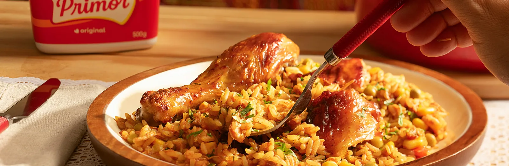
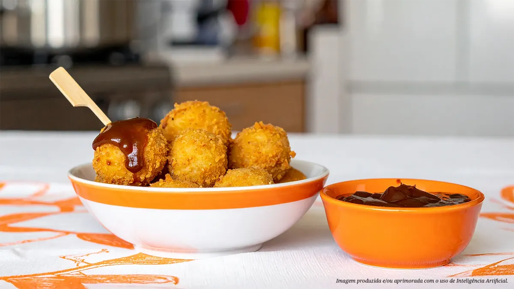
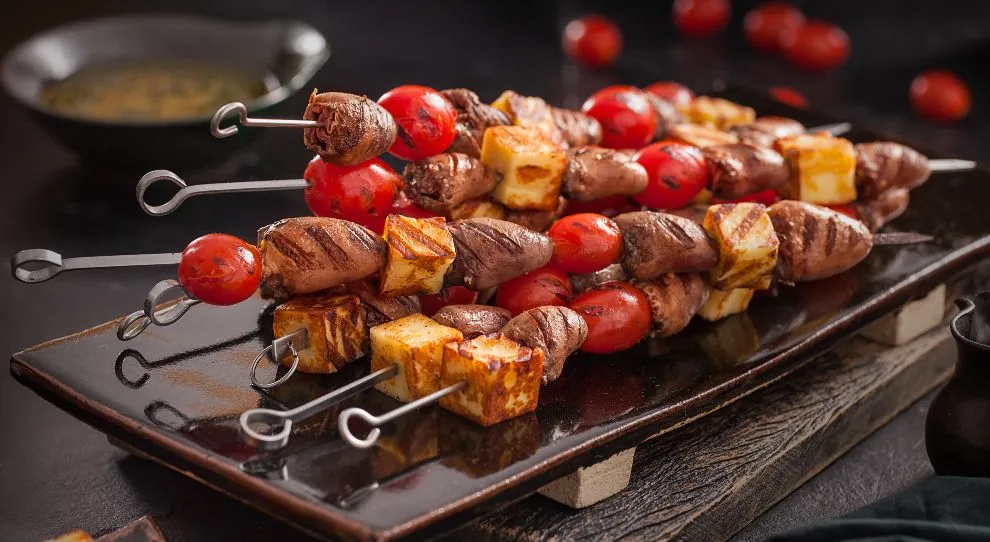
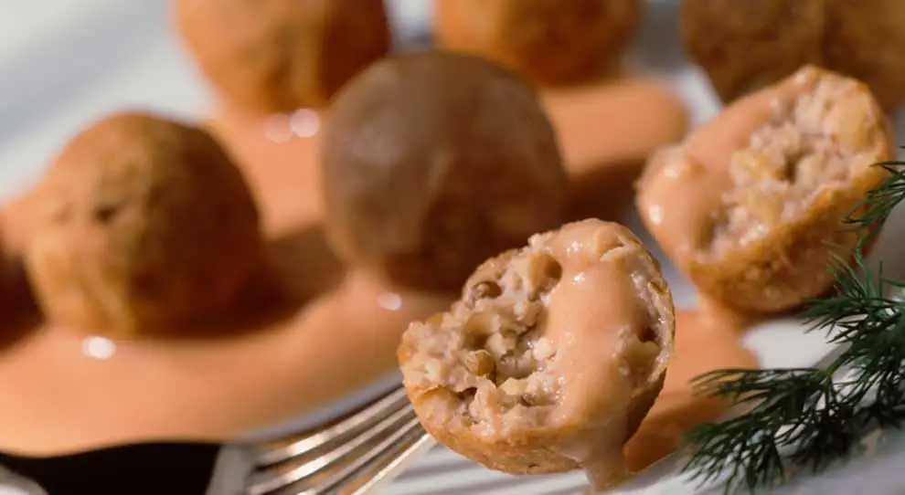
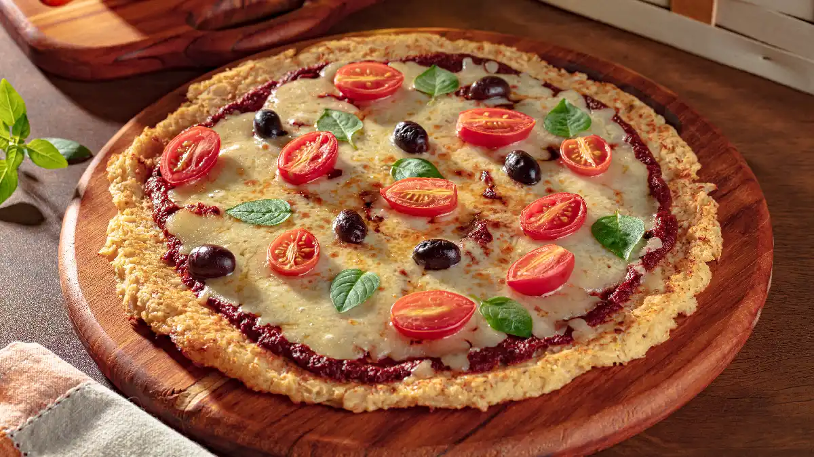
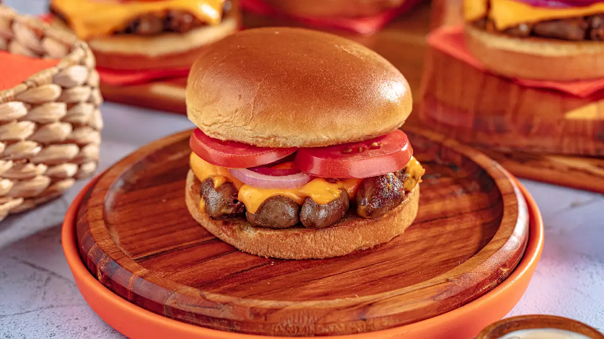
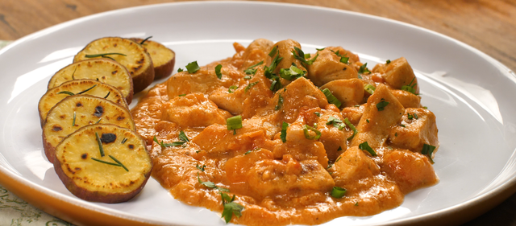

Mergulhe nos sabores da Amazônia com o tradicional Pato no Tucupi.
O caldo amarelo e aromático ganha ainda mais riqueza quando o pato é refogado e preparado com o
cuidado e a qualidade da Margarina Primor, garantindo uma carne macia e cheia de sabor.
Ingredientes
1 pato inteiro (cerca de 2kg) cortado em pedaços.
2 limões.
Sal e pimenta-do-reino a gosto.
3 colheres de sopa de Margarina Primor.
1 cebola grande picada.
4 dentes de alho picados.
2 litros de tucupi.
1 maço de jambu.
3 folhas de chicória (ou alfavaca).
Pimenta-de-cheiro a gosto.
Modo de preparo
Tempere os pedaços de pato com sal, pimenta-do-reino e suco de limão. Deixe marinar por pelo menos 1 hora.
Em uma panela grande, derreta a Margarina Primor e frite os pedaços de pato até dourarem.
Acrescente a cebola e o alho e refogue até dourarem.
Adicione o tucupi, a chicória e a pimenta-de-cheiro. Cozinhe em fogo baixo por cerca de 2 horas ou até que o
pato esteja bem macio.
Enquanto isso, cozinhe o jambu em água fervente até que esteja macio. Escorra e reserve.
Adicione o jambu ao pato e deixe cozinhar por mais 10 minutos.
Ajuste o sal e a pimenta-do-reino.
Sirva quente com arroz branco.

Almoço galinhada
A Galinhada é um prato de “sustância” que conforta o coração.
O arroz cozido junto com o frango absorve todos os temperos, e o refogado inicial com
Margarina Primor garante que cada grão fique soltinho, brilhante e muito saboroso.
Ingredientes
1kg de frango (pedaços de sua preferência).
Suco de 1 limão.
2 colheres de sopa de Margarina Primor.
1 cebola grande picada.
3 dentes de alho picados.
2 tomates sem pele e sem sementes picados.
1 pimentão vermelho picado.
1 pimentão verde picado.
2 xícaras de arroz.
4 xícaras de água quente.
1 colher de chá de açafrão.
Sal e pimenta-do-reino a gosto.
Salsinha e cebolinha picadas a gosto.
Modo de preparo
Tempere o frango com sal, pimenta-do-reino e suco de limão. Deixe marinar por pelo menos 30 minutos.
Em uma panela grande, derreta a Margarina Primor e frite os pedaços de frango até dourarem.
Retire o frango e reserve.
Na mesma panela, refogue a cebola e o alho até dourarem.
Adicione os tomates e os pimentões e refogue até que os tomates comecem a desmanchar.
Acrescente o arroz e o açafrão e misture bem.
Adicione a água quente, o frango reservado e ajuste o sal.
Cozinhe em fogo médio até que o arroz esteja macio e a água tenha secado.
Finalize com salsinha e cebolinha picadas e sirva quente.
Torta de Fiesta com Cogumelos Paris
Receitas de torta salgada de Natal fazem muito sucesso nas comemorações de fim de ano.
Preparada com uma deliciosa massa folhada, o segredo para o sucesso deste prato está no recheio
feito com a Ave Fiesta Temperada Seara: uma carne tenra e suculenta com um sabor surpreendente, com grande
concentração de carnes nobres.
Ingredientes
200g de sobras de Ave Fiesta Temperada Seara.
200g de cogumelo paris cortado em 4.
1 cebola fatiada.
2 colheres de sopa de manteiga.
1 colher de sopa de azeite.
3 colher de sopa de farinha de trigo.
2 colheres de sopa de mostarda dijon.
½ xícara de creme de leite fresco.
½ xícara de caldo de frango caseiro.
4 ramos de tomilho debulhado.
1 colher de chá de sal.
Noz moscada e pimenta do reino a gosto.
1 folha de massa folhada laminada.
1 ovo.
1 gema.
Modo de preparo
Aqueça uma frigideira funda em fogo médio;
Junte a manteiga e o azeite;
Quando a manteiga derreter, aumente o fogo e salteie o cogumelo por 2 minutos;
Volte com o fogo para a temperatura média, junte a Ave Fiesta Temperada Seara e refogue por mais 2 minutos;
Salpique a farinha de trigo e refogue até que esteja incorporada;
Diminua o fogo e adicione a mostarda e acerte o sal e a pimenta-do-reino;
Aqueça o caldo de galinha e o creme de leite;
Regue a mistura de Fiesta com cogumelos com a mistura de caldo de galinha, mexendo sempre;
Junte o tomilho, a noz moscada e acerte o sal e a pimenta, se necessário;
Cozinhe até engrossar;
Transfira para um refratário forneável pouco menor que a massa e reserve.
Preaqueça o forno a 200º. Abra a massa sobre o refratário com o creme de Fiesta e cogumelos. Dobre as bordas
para dentro do recheio.
Bata rapidamente o ovo e a gema e pincele sobre toda a superfície da massa folhada. Leve para assar por
aproximadamente 15 minutos na prateleira superior do forno ou até que esteja dourada e crocante. Sirva na
sequência.

Pipoquinha de frango na airfryer com molho barbecue
Para aquela noite de filmes descontraída, a pipoquinha de frango na airfryer é o petisco ideal.
Super fácil e rápida de preparar, ela garante a crocância perfeita sem sujar a cozinha.
Enquanto a pipoquinha doura na airfryer, prepare o molho barbecue caseiro que transforma o
petisco em uma experiência deliciosa.
Ingredientes
1 embalagem de Pipoquinha de frango Seara
1 xícara de ketchup
2 colheres de sopa de vinagre de maçã
2 colheres de sopa de açúcar mascavo
1 colher de sopa de mostarda amarela
1 colher de chá de páprica (doce ou defumada)
1/2 colher de chá de alho em pó
1/2 colher de chá de cebola em pó
Sal e pimenta do reino a gosto
Modo de preparo
Em uma panela pequena, misture o ketchup, o vinagre de maçã, o açúcar mascavo, a mostarda amarela, a
páprica, o alho em pó e a cebola em pó.
Leve ao fogo baixo, mexendo sempre, até ferver.
Tempere o molho com sal e pimenta do reino a gosto.
Cozinhe por 5 a 10 minutos ou até o molho engrossar levemente. Reserve.
Preaqueça a airfryer a 200°C por cerca de 5 minutos.
Distribua a Pipoquinha de Frango Seara na cesta da airfryer em uma única camada, sem sobrepor. Se
necessário, cozinhe em mais levas.
Cozinhe por 12 a 15 minutos, virando na metade do tempo, até ficarem douradas e crocantes.
Sirva a Pipoquinha de Frango Seara imediatamente acompanhada do molho barbecue caseiro.
Frango ao Curry com Arroz de Coco
Frango ao curry é uma combinação clássica da culinária de alguns países do Oriente, assim como os
caribenhos, que ensina a misturar cortes de frango cozidos na manteiga com curry. O preparo varia de
região para região e também leva cebolas e uma variedade de especiarias, como cominho, coentro,
canela, gengibre, açafrão, cardamomo e a própria folha de curry triturada.
Ingredientes
Para o frango ao curry:
800g de Filé de peito em cubos Seara
2 colheres (sopa) de manteiga
4 colheres (sopa) de azeite de oliva
1/4 de cebola picada
4 dentes de alho picados
2 xícaras de creme de leite fresco
Sal a gosto
Pimenta-do-reino a gosto
Para o arroz de coco:
1 xícara de arroz jasmim
1 ¼ xícara de leite de coco
1 folha de louro
Sal a gosto
Modo de preparo
Como fazer frango ao curry:
Em uma panela, aqueça a manteiga com o azeite, em fogo médio;
Refogue a cebola e o alho por três minutos, mexendo, até a cebola ficar transparente;
Aumente o fogo, junte o Filé de peito em cubos Seara e misture;
Cozinhe por cinco minutos ou até dourar, adicione o curry e misture novamente;
Junte os demais ingredientes e cozinhe em fogo baixo por mais cinco minutos ou até o molho ficar cremoso e o
frango cozido.
Para o arroz de coco:
Em uma panela, junte 1 1⁄4 xícara de água e os demais ingredientes;
Mantenha em fogo alto, mexendo, até levantar fervura;
Reduza, então, o fogo para médio e tampe a panela;
Cozinhe até todo o líquido ser absorvido, mexendo de vez em quando para o arroz não grudar;
Retire do fogo e deixe descansar por dez minutos;
Sirva com o frango ao curry.

Espetinho de Coração de Frango com Queijo Coalho e Tomate
O coração de frango e o queijo coalho são alguns dos petiscos favoritos quando o assunto é churrasco.
Para preparar uma deliciosa entrada para churrasco, a dica é intercalar os ingredientes em um espetinho
e adicionar tomate cereja para dar mais sabor.
Ingredientes
Como fazer coração de frango com queijo coalho:
Em um espetinho de churrasco de metal, espete um coração, um tomate-cereja e um pedaço de queijo coalho.
Repita esse processo até preencher o espetinho;
Coloque na churrasqueira por 10 a 20 minutos ou até o ponto desejado;
Para o molho:
Junte as azeitonas, o azeite, a salsinha e o suco de limão em um recipiente;
Misture bem e sirva.
Modo de preparo
Como fazer coração de frango com queijo coalho:
Em um espetinho de churrasco de metal, espete um coração, um tomate-cereja e um pedaço de queijo coalho.
Repita esse processo até preencher o espetinho;
Coloque na churrasqueira por 10 a 20 minutos ou até o ponto desejado;
Para o molho:
Junte as azeitonas, o azeite, a salsinha e o suco de limão em um recipiente;
Misture bem e sirva.
Asas Crocantes de Frango
Asinha de frango já é uma delícia, mas esse aperitivo fica melhor ainda! Quer ver?
Experimente fazer o petisco de boteco empanado com farinha de trigo, claras e farinha de rosca.
Ingredientes
8 Asas Inteiras Caipiras Nhô Bento
4 colheres de sopa de farinha de trigo
2 colheres de café de pimenta-de-caiena
2 claras ligeiramente batidas
75g de farinha de rosca
2 colheres de sopa de ervas frescas picadas
4 colheres de sopa de óleo de girassol
Suco de 1 limão espremido
Sal a gosto
Pimenta-do-reino a gosto
Modo de preparo
Tempere as Asas Inteiras Caipiras Nhô Bento com limão, sal e pimenta a gosto. Reserve;
Em um prato, misture a farinha de trigo com a pimenta-de-caiena;
Em outro prato, misture as ervas com a farinha de rosca;
Pegue uma asa por vez, passe pela mistura de farinha de trigo, depois pelas claras e por último a farinha de
rosca;
Coloque o óleo em uma frigideira para aquecer e frite as asas em fogo moderado, virando frequentemente, até
que todos os lados estejam dourados;
Transfira as asas para uma assadeira, leve ao forno preaquecido (190°C) por aproximadamente 40 minutos e
sirva quando estiverem assadas e douradas.

Almôndega de Frango
Quer preparar um prato com frango saboroso, simples e que praticamente todo mundo ama?
Faça deliciosas almôndegas de frango no seu próximo almoço ou jantar rápido em casa.
Ingredientes
Para as almôndegas de frango:
1,5 kg de Peito sem Pele Bandeja Seara moído
300g de nozes picadas grosseiramente
1 cebola bem picada
1/4 de xícara de molho inglês
2 ovos
Sal a gosto
Óleo para fritar
Para o molho vermelho:
2 cebolas médias picadas
1/2 xícara de manteiga
3/4 de xícara de farinha de trigo
3 xícaras de caldo de galinha
1/2 xícara de catchup
2 colheres (sopa) de molho inglês
2 xícaras de creme de leite
Sal a gosto
Modo de preparo
Como fazer almôndega de frango:
Misture todos os ingredientes e, com as mãos untadas com óleo, faça bolinhas com 1 colher (sopa) dessa
mistura;
Aos poucos, frite as almôndegas em óleo quente, tomando cuidado para não dourar muito por fora e deixar crua
por dentro;
Escorra o excesso de óleo em papel toalha.
Para o molho vermelho:
Em uma outra panela, frite a cebola na manteiga até começar a dourar;
Acrescente a farinha de trigo, mexendo sempre até que ela fique com uma cor dourada;
Adicione o caldo lentamente e misture;
Junte o catchup e o molho inglês e cozinhe até engrossar o molho;
Ajuste os temperos, adicione as almôndegas fritas e deixe ferver;
Junte o creme de leite, misture, desligue o fogo e sirva.

Pizza low carb de frango
A pizza low carb de frango é a opção ideal para quem busca uma refeição saborosa, mas quer manter
uma alimentação equilibrada. A combinação da massa feita com frango desfiado, ovos e parmesão
surpreende pela textura firme e sabor marcante.
Ingredientes
800g de Coração de Frango Seara
4 pães de brioche para hambúrguer
4 colheres de chá de Margarina Doriana com Sal (1 para cada pão)
4 fatias de queijo cheddar
100g de tomate cortado em rodelas finas
80g de cebola roxa cortada em rodelas finas
Sal a gosto
Pimenta-do-reino a gosto
Modo de preparo
Como fazer pizza low carb de frango
Massa
Pre-aqueça o forno a 200°C;
Em uma tigela grande, misture o Peito de Frango Desfiado Seara em temperatura ambiente com os ovos, o queijo
parmesão, o sal e a pimenta-do-reino;
Com as mãos ou uma espátula, mexa até formar uma mistura úmida;
Unte uma forma com azeite e forre uma assadeira com papel manteiga e espalhe a massa, moldando um disco com
cerca de 1cm de espessura. Pressione bem para deixar a superfície compactada e nivelada;
Leve ao forno preaquecido e asse a 200°C por 20 minutos, ou até a massa firmar e começar a dourar levemente
nas bordas;
Montagem
Retire a massa do forno com cuidado e espalhe o molho de tomate por cima, deixando uma borda livre de cerca
de 1cm;
Cubra com o queijo mussarela ralado e adicione os toppings de sua preferência;
Volte ao forno por mais 10 minutos a 200°C, ou até o queijo derreter completamente e começar a gratinar;
Retire do forno e espere 5 minutos antes de cortar, para a massa firmar um pouco e facilitar o manuseio;
Fatie e sirva imediatamente.

Sanduiche de coração de frango
Se você está em busca de uma receita diferente, deliciosa e especial, o sanduíche de coração de
frango é uma excelente pedida. O sabor marcante do coração temperado e grelhado na brasa combina
perfeitamente com a cremosidade do queijo cheddar derretido, o toque adocicado do brioche e a
acidez suave do tomate e da cebola roxa.
Ingredientes
800g de Coração de Frango Seara
4 pães de brioche para hambúrguer
4 colheres de chá de Margarina Doriana com Sal (1 para cada pão)
4 fatias de queijo cheddar
100g de tomate cortado em rodelas finas
80g de cebola roxa cortada em rodelas finas
Sal a gosto
Pimenta-do-reino a gosto
Modo de preparo
Como fazer sanduíche de coração de frango
Retire o coração da embalagem e mantenha em temperatura ambiente por cerca de 10 minutos para facilitar a
modelagem e evitar que a carne esfrie rapidamente;
Esquente uma chapa e quando estiver bem quente, adicione azeite, os corações, sal e pimenta. Salteie bem,
mexendo ocasionalmente;
Divida os corações na frigideira em 4 partes e coloque duas fatias de cheddar em cima de cada parte. Espere
o queijo derreter;
Corte os pães brioche ao meio e espalhe 1 colher de margarina em cada parte;
Leve os pães à grelha com o lado da manteiga voltado para baixo e deixe tostar por cerca de 2 minutos, até
ficarem levemente dourados;
Retire os pães da grelha e comece a montagem com a base do pão;
Coloque o punhado de coração com queijo derretido em cada base de pão, adicione os tomates e a cebola roxa.
Tempere com sal e pimenta;
Finalize com a parte de cima do pão e sirva imediatamente.

Sobrecoxa de frango assada com creme de cebola e maionese
A sobrecoxa de frango assada com creme de cebola é uma receita simples e deliciosa, perfeita para
quem busca uma refeição suculenta e com sabor marcante. Embora não seja uma novidade na cozinha,
essa versão com creme de cebola e maionese se destaca por formar uma camada crocante e dourada por
fora, mantendo a carne macia e úmida por dentro.
Ingredientes
6 Sobrecoxas de Frango Seara DaGranja
Suco de 2 limões
Sal a gosto
Pimenta a gosto
1 pacote de creme de cebola
4 colheres de sopa de maionese
Modo de preparo
Tempere as sobrecoxas a gosto e as deixe marinando por pelo menos meia hora no suco de limão;
Coloque as sobrecoxas em um refratário, acrescente a maionese e misture bem;
Vá acrescentando aos poucos o creme de cebola sem deixar de misturar;
Quando os temperos estiverem bem incorporados ao frango, leve as sobrecoxas para assar a forno preaquecido
200° por aproximadamente 1 hora ou até dourar;
Sirva a seguir.
Peru Assado com Molho de Laranja, Salpicão e Farofa de Bacon com Passas
A receita de peru assado com molho de laranja é uma opção refinada e muito saborosa para incluir no
cardápio da ceia de Natal completa! Feita com diferentes temperos – como salsão, folhas de louro,
cravos-da-índia e anis estrelados – o preparo ensina como fazer um molho de laranja para peru
aromático, que deixa a carne do peru assado mais macia e suculenta por conta da acidez da fruta.
Ingredientes
1 embalagem de Peru Temperado Seara
Para o molho de laranja:
Miúdos do Peru Temperado Seara assado
4 colheres de sopa de azeite
2 cebolas picadas
2 cenouras picadas
2 talos de salsão picados
1 alho-poró picado
1 xícara de vinho branco seco
2 folhas de louro
2 cravos-da-índia
1 anis estrelado
½ xícara de suco de laranja
2 litros de água quente
1 colher de sopa de farinha de trigo
1 colher de sopa de manteiga
Raspas de 2 laranjas
1 colher de chá de sal
Para o salpicão de frango:
500g de peito de frango desfiado
1 cebola picada
1 colher de sopa de vinagre de vinho branco
5 cubos de gelo
1 xícara de água gelada
2 cenouras raladas
1 lata de milho
½ xícara de passas
1 maçã picada
Suco de 1 limão
Salsa picada a gosto
1 ovo
1 gema
1 dente de alho
1 colher de chá de fumaça líquida
200 ml de óleo
¼ colher de chá de sal
Pimenta-do-reino a gosto
2 xícaras de batata palha
Para a farofa de bacon:
2 xícaras de farinha de mandioca torrada
½ xícara de manteiga picada
1 cebola picada
1 xícara de bacon picado
½ xícara de uva passas
1 colher de chá de sal
Modo de preparo
Como fazer peru de Natal assado:
Siga o modo de descongelamento e preparo indicado na embalagem de acordo com seu tipo de forno. Prático e
suculento, o Peru Temperado Seara já vem com ingredientes especiais e pronto para ser levado direto ao
forno.
Como fazer molho de laranja:
Preaqueça o forno a 230ºC;
Em uma assadeira, disponha os miúdos já descongelados e leve para assar por cerca de 30 minutos ou até
estarem bem dourados. Reserve;
Aqueça uma panela funda em fogo médio e coloque o azeite;
Adicione a cebola, a cenoura e o aipo e refogue até começar a dourar. Junte o alho-poró, mexendo sempre, e
refogue também;
Abaixe o fogo e acrescente o vinho. Deixe reduzir pela metade;
Adicione o louro, os cravos, o anis, os miúdos e o suco de laranja. Refogue até ferver;
Despeje a água quente, tampe a panela e deixe cozinhar por 1h. Coe e reserve;
Em fogo médio, derreta a manteiga em uma panela e junte a farinha de trigo. Com auxílio de um batedor de
arame, verta o caldo coado reservado vagarosamente, batendo até toda a farinha se dissolver;
Junte as raspas de laranja, o sal e cozinhe até o molho engrossar;
Transfira para uma molheira e reserve.
Como fazer salpicão de frango:
Em um liquidificador, bata o ovo e a gema até espumar por cerca de 1 minuto;
Adicione o alho e a fumaça líquida e bata até a mistura ficar homogênea;
Na velocidade mínima, verta em fio o óleo bem devagar até que o creme emulsifique;
Junte o sal, a pimenta-do-reino e bata somente até incorporar;
Transfira para um recipiente com tampa e leve à geladeira por pelo menos 15 minutos;
Em uma vasilha, junte a cebola picada, o vinagre, o gelo e a água gelada de molho por 10 minutos. Escorra e
reserve;
Adicione a maçã picada com o suco de limão e reserve;
Em uma tigela grande, misture o frango desfiado, a cebola escorrida, a cenoura, o milho, as passas e a maçã
com o suco de limão;
Junte a maionese, misture bem e leve à geladeira;
Adicione a batata palha ao salpicão de frango somente no momento de servir.
Como fazer farofa de bacon:
Aqueça em fogo médio uma frigideira larga e adicione a manteiga e o bacon;
Frite o bacon até dourar, coloque a cebola e refogue até murchar;
Adicione as passas e refogue por mais 2 minutos;
Junte a farinha de mandioca, o sal e refogue até que a farinha comece a dourar;
Desligue o fogo, transfira para uma travessa e sirva.